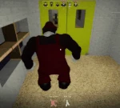
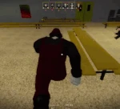

Mx is the ninth monster in Pillar Chase 2. He is an ancient spirit who takes a twisted form of Mario and indirectly kills anyone who dares to play his game to trap their souls in the characters to be his playthings for all eternity. He is the main antagonist of his own game & horrorbrew, Mario '85, and is currently owned by RazzDazzleDoo. He can be unlocked for 1585 coins in the shop. (Previously 1985 before the Black Friday Event's conclusion). He was released on June 21st, 2024..
|  When pressing 1 Mx will perform a shoulder charge in the direction he is facing. While charging, MX can slowly turn in left or right direction, and he cannot stop charging until he hits a wall, kills a player, or after covering a certain distance. Players caught in his path will take 9 damage per tick and be dragged along with him. When hitting a wall, MX will be stunned for a couple of seconds. Has a 12-second cooldown after stopping his charge. |
 When pressing 2 Mx will perform a flying jump through the air with a decent amount of freedom as to where he lands. A prompt will then appear on nearby players' screens reading "Jump Now". Anybody who doesn't jump or jumps at the wrong time will be tripped, stunning them briefly. Players who jump at the correct time will be unaffected. If MX lands directly on top of a player (and they do not jump), it will instantly kill them, even if they have the Tanky Upgrade.[1] This insta-kill can also hit multiple people at once, if they're close enough to eachother. This will not grant bloodlust. Has a 10-second cooldown after landing. |